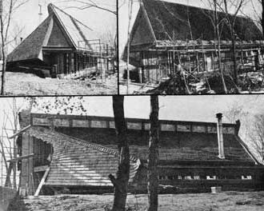
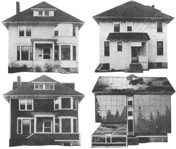

Wilson Clark, Co-Director of Environmental Policy Institute in Washington, D.C., is the author of Energy for Survival published by Doubleday-
Anchor Press in both hard cover and paperback.
I recently visited a St. Paul, Minnesota inner-city house that both was, and wasn't, like the other homes in its community. The dwelling-located on Laurel Avenue, at the periphery of a 30-square-block Model Cities urban redevelopment program-has the square, bulky lines of its neighbors. Unlike them, however, the old building is a live-in test lab for a number of energy conservation ideas. It also will soon contain one of the first solar heating systems to be retrofitted to an "ordinary" urban home.
The house-known as "Ouroboros East"-is being completely renovated by a team of students from the architecture and mechanical engineering departments of the University of Minnesota in Minneapolis under the direction of architecture professor Dennis Holloway.
This is the second major project that Holloway has undertaken in an effort to demonstrate that energy self-sufficiency may be possible on a dwelling-by-dwelling basis through the application of solar power, proper design, and the reuse of resources which our culture now squanders and throws away. The name "Ouroboros" has been given to both undertakings, since that mythical serpent regenerates itself by devouring its own tail . . . thus symbolizing the philosophy of recycling.
Professor Holloway's first house, "Ouroboros South", grew out of an environmental design course that he taught early in 1973. The class was broken down into working groups of 10 students and each team was assigned the task of drawing up a specific system for a largely self-sufficient house (which, itself, was mythical at the time). Some groups devised wind power systems, other solar collectors, still others attempted to integrate native materials and local climatic factors into the final design. Taken together, the whole project was aimed squarely at creating a self sufficient dwelling which would recycle its own wastes.
When the class had finished its winter-term assignment, Holloway was so impressed by the results that he decided to solicit backing for the construction of a house built to the students' specifications.
And he was successful! The university contributed land to the project and a number of local businesses and power companies made donations of both materials and funds. Groundbreaking for the dwelling-which contains about 2,000 square feet of living space-took place in mid-1973 and, except for a few minor modifications which remain to be tidied up, the house is now finished.
Ouroboros South is located at the University of Minnesota's Rosemount research station, which is about a 40-minute drive from the main campus. A solar collector-that, for maximum efficiency, slants up at a 60° angle from the horizon-is built into the south wall of the strikingly modern building . . . and the home's north side is a gradually sloping wall of grass-topped earth, similar to the sod roof used for hundreds of years in Scandinavian countries.
During the winter, a thick layer of snow drifts onto the earthen top of this unusual dwelling and the sod plus its white covering add up to inches and inches of excellent insulation. Throw in the warmth collected by the solar panels and electricity from a nearby wind-driven generator . . . and you have a home which is well on its way toward energy self-sufficiency.
While Ouroboros South was being designed, Professor Holloway decided that an even more important demonstration of the use of solar power and energy conservation could be made right in downtown Minneapolis or neighboring St. Paul. "If any place is going to be affected by shortages of fuel," Dennis says, "it will be the large central city. So we thought it might be a good idea to convert an older home-an inner city structure which was highly visible to the people with the lowest incomes-into an energy-conserving building."
Holloway soon discussed his idea with Thomas J. Kelley (currently the St. Paul city administrator), who was then president of Urban Laboratory, Inc .... a small firm which tries to improve city neighborhoods by the enlightened application of new technologies. Kelley immediately became excited about retrofitting an existing house with solar and energysaving devices, and suggested that the federal Housing and Urban Development agency (HUD) might help Dennis and his class acquire a property for its experiment. After several meetings with HUD officials, the Laurel Avenue residence was chosen, and the students purchased the building-from HUD- for $1.00. Thus was Ouroboros East born.
The house now being retrofitted was selected-in part-because of its south-facing back roof . . . so that solar collectors could be installed without noticeably changing the building's appearance from the street. Holloway, Kelley, and others further eased their new architectural ideas into the neighborhood by explaining-in a number of discussions with community leaders and groups-the purpose of the project. Kelley also helped by obtaining a special ordinance change in the St. Paul building codes to make the solar collector and other unique features planned for the house "legal".
During the winter and spring of 1974, Professor Holloway assigned two architectural classes-one working with energy and the other with environmental design-plus 20 mechanical engineering seniors to develop plans for conversion of the Laurel Avenue residence.
"It was an exciting consortium," Dennis now says, "involving over 200 people. The design students coordinated teams which produced both overall plans for the house and specific specific designs for the retrofitting of solar energy systems, for the retrofitting of solar energy systems, greenhouses for food production, new insulating materials and techniques, and improved household waste control systems to reduce the use of water."
Next, while the students wrote a 220-page book about their planned renovation of the old home, Holloway and Kelley rustled up funds for the work. The going was slow in the beginning but-eventually-the university, Kelley's company, and the Minnesota Museum of Science in St. Paul struck a bargain: university students are committed to supply all necessary labor while the other two organizations provide whatever finances are needed. Still, funds have been a problem, and grants-such as $1,000 from the Minnesota Bicentennial Commission-have helped keep the project afloat from time To time. For instance, Ned Hoffman-an industrial arts instructor who is overseeing construction and teaching his helpers the fire points of craftsmanship-has been paid by the federal Comprehensive Employment Training Act (CETA) under the auspices of the St. Paul city council (which, it should be noted, has contributed an additional $5,000 to Ouroboros East).
Since work was started on the renovation in April of 1974; the Laurel Avenue dwelling has become, in Dennis Holloway's words, "a kind of whole catalog in reality of what can be done to an old house to conserve energy". While some students have stripped the house of most of its original interior finishings, walls, and insulation . . . other teams have been fabricating new windows, installing better insulation, and redesigning the building's plumbing and heating system.
Some of the old windows on the Laurel Avenue structure have been covered with a layer of insulation and boarded over. Others have been fitted with traditional storm sash. Still others remilled so that an extra pane of glass can be added to the original sash. A few have been replaced with double-pane Andersen Vinyl-Clad units. And, to top them all, the most unusual window so far used in the renovation is the "Velux" . . . which opens diagonally and which has been positioned in the roof to both ventilate heat during the summer and conserve warmth in the winter.
Four different types of insulation are being installed in the roof and walls of Ouroboros East: [1] Fiberglas batts, [2] high-density urea foam, [3] high-density formaldehyde foam, and [4] loose fill, some of which will be made from shredded newspapers. Performance and relative cost tests will be run on the varying kinds and thicknesses of insulating materials.
Like energy, water will be conserved in the experimental house. A special dry toilet-the Clivus Multrum (a gift from Clivus, U.S.A. in Boston)-is being installed. The Clivus was designed in Sweden in the 1930's, needs no water, and produces compost-which can be used as fertilizer-from human waste. Although still considered a radical departure from "real" toilets in this country, the minimum--maintenance unit has been extensively tested in Sweden and, since 1964, officially approved by that nation's public health department.
Other toilets, similar to the Clivus Multrum, also will be tested at Ouroboros East. And still others-of the conventional flush type-are being redesigned to use only a pint of water (rather than the usual five gallons) per cycle.
To further minimize the Laurel Avenue home's water consumption, a Japanese bath will replace the American-style tub To use it, individual bathers will first wash off with soap and a bucket of water . . . and, once cleaned, enter a large communal tub which is kept heated at about 100° F by the solar collectors. The idea-of course-is that since few impurities will be carried into the master tub, its water won't have to be change very often. The concept works in Japan and should work just as well here in the US.
Nor have people who prefer showers been forgotten: Special misting nozzles which atomize their spray, however, will allow such folks to bathe most satisfactorily with only a fraction of the water usually necessary for such a bath.
As a final capper, a special "gray water" system in the house will recirculate bath and kitchen water through the flush toilets and thereby reduce the home's use of "new" H 2 0 to a near-absolute minimum.
In addition to recycling some of the water which passes through the kitchen, student teams are insulating the room's refrigerator (to cut its energy consumption), redesigning pots and pans to make them cook with less heat input, and modifying appliances so that they'll operate on reduced amounts of electricity.
About one-third of the food prepared in the resulting low energy kitchen will come from a 1,200-square-foot garden behind Ouroboros East. And, between the residence and the garden, a 14-square-foot cold frame-or mini-greenhouse-will be used to give vegetables a head start on the growing season every spring.
Still, of all the changes now underway on the Laurel Avenue building and its grounds, the most striking has to be the solar collectors being retrofitted to the dwelling. Eventually, a total of three designs will be installed on the St. Paul residence. And, already, the metal and glass "flat plates" of the first (based on work done over the past 30 years by Harry Thomason, of Washington, D.C.) and second (devised by U of M mechanical engineering graduate John Ilse) cover 1,200 square feet of the structure. The panels, in fact, completely replace what used to be the building's back wall and half its roof!
In operation, the sun's rays will heat a black metal surface under the panes of clear glass which cover the flat-plate collectors. Water will next be warmed by letting it run down the hot surface or by pumping it through tubes fastened to the sheets of black metal. The liquid will then be piped into steel storage tanks in the basement of the house, where it will be held for use at night or during periods of cloudy weather.
Sooner or later, a parabolic third collector will also be erected on the building's roof. It differs from the two flatplate designs by catching a large patch of sunlight on a broad piece of shiny metal which is curved to reflect, focus, and concentrate the solar energy onto boiler tubes (through which, again, water is circulated). When the three-way (two flat-plate and one parabolic collector) system is complete, sunshine is expected to furnish the residence with almost all of its hot water year-round-and about 70% of its winter heat. A backup electric furnace will supply the remaining 30% of the structure's spaceheating needs.
When Ouroboros East is completed this year, it will serve as both living quarters for a student commune and as an educational center. Private rooms on the second floor and in an attic loft will house the students . . . who'll monitor the dwelling's various out-of-the-ordinary systems and explain their operation to visitors. Video tapes showing the design and construction of the building's unusual features will be screened in a first-floor classroom and "hands on" experiments with the concepts will be conducted in a basement workshop. Cue cards which explain the function and cost of the special windows, insulation, toilets, etc., are also being posted throughout the residence.
"We've planned Ouroboros East to be more than just a house or an educational program," says Professor Holloway. "It's a place where people can learn about our energy conservation systems, and then use the workshop to build their own."
City Administrator Thomas Kelley is just as enthusiastic. "We're entering a new age . . . an age in which people all over this country will have to learn, once again, to be at least partly selfsufficient. Since most of us currently live and work in cities, it's important that we begin to develop our new technologies right now and right in the middle of our urban area. And that's exactly what Ouroboros East is designed to do."
Yes, but can other big-city inner-core neighborhoods afford to set up Ouroboros East projects of their own? Or, to put the question another way, can they afford not to?
The cost of renovating the Laurel Avenue house in St. Paul (since almost all the labor and much of the material was free) added up to peanuts. Peanuts, at least, when compared to federal Energy Research and Development Administration programs which-so far-have concentrated on the construction from scratch of new "dream" houses which always wind up with price tags of more than $100,000 apiece. And how many of us-let alone those among us who live in depressed innercity neighborhoods-can afford a $100,000 home?
If solar energy and other forms of "soft" technology are to become major forces in American life-as they must-it will probably be people like the architecture students at the University of Minnesota, rather thin the ERDA-funded projects, that make it all possible.
|
TOP LEFT: The south side of Ouroboros South, with the solar collectors completed. TOP RIGHT: The same area photographed at an earlier stage of construction. BOTTOM: A view of the house from the north (note the Scandinavian-style sod roof). |
 LEFT: The Laurel Avenue house's north side, as purchased (top) and as rebuilt. RIGHT: The south side, before and after. |
 |